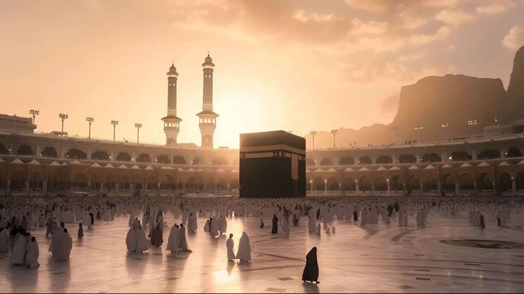

10+
Authenticated sources
﴿ وَ لسَّـٰبِقُونَ ٱلْأَوَّلُونَ مِنَ ٱلْمُهَـٰجِرِينَ وَٱلْأَنصَارِ وَٱلَّذِينَ ٱتَّبَعُوهُم بِإِحْسَـٰنٍۢ رَّضِىَ ٱللَّهُ عَنْهُمْ وَرَضُوا۟ عَنْهُ وَأَعَدَّ لَهُمْ جَنَّـٰتٍۢ تَجْرِى تَحْتَهَا ٱلْأَنْهَـٰرُ خَـٰلِدِينَ فِيهَآ أَبَدًۭا ۚ ذَٰلِكَ ٱلْفَوْزُ ٱلْعَظِيم ﴾

Authenticated sources
sahaba
article
This website is dedicated to introducing the first seven Companions of the Prophet Muhammad who embraced Islam and stood by him in the early days of the Islamic message, along with excerpts about some of the Companions in general. We aim to present their sacrifices and enduring contributions to Islam. Our mission is to inspire website visitors by highlighting the faith, courage, and dedication of these remarkable individuals for anyone wishing to learn about the foundations of Islamic history.
read more